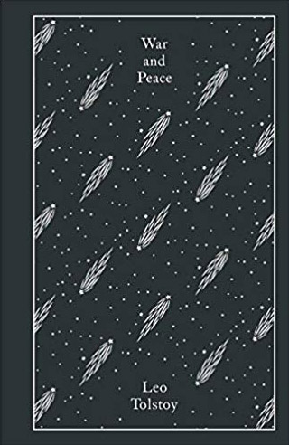

From the fall of the dynasty to the end of humanity, across oceans, continents, the entire universe and time itself: why we can’t forget and we never should.
Reading List
Daniel York Loh


The Three Body Problem by Lui Cixin
Chinese sci-fi is a thing but a well-kept secret thing in the West. This is the grand-daddy of them all. A vast sprawling trilogy set over literally millennia with a whole football stadium-full of characters, mind-boggling scientific detail and an epic, brilliantly imagined disaster scenario. It’s vividness and scale astonishing, equal parts compelling, thrilling, terrifying and genuinely heartbreakingly achingly tragic. My personal favourite is Number 2 in the series, The Dark Forest, but books 1 and 3 are translated by the peerless Ken Liu so it all evens out.
It was adapted into a film which I think has yet to see the light of day but, given the sorry state of the PRC film industry, I’m not sorry to be brutally honest. A lavishly budgeted long-form TV series might work for it but I do truly wonder whether any dramatised medium could to justice to its heroic magnificence. It’s level of detail, in the way it divides into “eras” (in the way that Chinese dynastic rule was), is also ridiculously pleasing, as is Liu’s chillingly imagined mass psychological scenarios as the world’s population reacts to the horrific series of dooms that descend on them. Stunning.
The Family by Ba Jin
One of the great social chroniclers of all time and sadly unknown in the wider world. Chinese people are often dehumanised and therefore stigmatised as an unfeeling and cruel race but Ba Jin’s heart and compassion for his characters is huge and his cry of rage against universal societal divides, in a very specifically Chinese setting, make his an urgent and essential voice. The Family is the story of three brothers from an upper-class Chengdu estate and focuses on Ba Jin’s perennial theme: social injustice. The way it begins from a place of almost idyllic Chinese privilege (with enough hints of problems to come to intrigue the reader) and builds to the ultimate and devastating tragedy of the novel’s later stages is masterful and compelling story-telling, as is its depiction of a very particular kind of Chinese patriarchy.
Ba Jin himself was later persecuted in the Cultural Revolution, indeed his wife died after being denied medical treatment – an event that understandably traumatised him for the rest of his life. He later campaigned for a Cultural Revolution Museum as a lesson for future generations. Asian politics (maybe all politics) is seemingly driven by a need to rewrite and erase history. Ba Jin’s is a voice that urges us not to forget.
The Field of Life and Death by Xiao Hong
Xiao Hong was an extraordinary woman who died tragically young. Fleeing from her home in China’s far remote North at a time when Chinese women really were expected to know their place (how much has changed is open to debate), she blazed a short burning bright trail before dying in a Hong Kong hospital at the tender age of 30. The Field of Life and Death is probably her crowning achievement: an episodic, poetic tale of ordinary country folk in the time of the Japanese occupation of China, it features a vast tapestry of stories and characters which manages at once to be hugely compassionate of the plight of ordinary people, yet at the same time highlights the passive defeatist fatalism which dooms them even more. Told in a series of vignettes with recurring characters it builds and builds in an epic narrative tour de force.
A troubled soul in a deeply troubled time in a troubled country, Xiao Hong’s life itself is worthy of a novel. At one point, abandoned penniless and pregnant, she only narrowly escaped being sold into a brothel by an angry hotel owner. Indeed she was the subject of a film, The Golden Era by Ann Hui, which I’d like to re-watch now I’m more of aware of the story of her life. A true feminine icon and the most urgent of voices that cries out to be heard.
Daughter of the River by Hong Ying
In the wake of Wild Swans there was a whole flurry of ‘Life In Communist China’ autobiographies. Hong Ying’s stood out head and shoulders above them all for me though and it was for two reasons: 1) Hers was a genuinely working-class voice, coming as she did from the slum compounds of a Central Southern China city, and 2) the incredible and visceral poetry of her writing. Eschewing any kind of sentimentalised linear narration form, Hong Ying riffs on episodes in her life with a blazing anger and searing sensuality. She conjures the sights, sounds and smells of her home town, the mountain city of Chongqing bisected by the Yangtze River of the book’s title, with a startling immediacy and her stories of poor, seemingly dispensable lives, riven by poverty, political forces above and the scramble to matter in the harshest of environments are harrowing, heartbreaking but essentially and urgently human. The conclusion, in Tiananmen Square in that protest when she imagines backwards to her home and the father she never had an opportunity to know is literally stunning.
I once tried to adapt Daughter of the River into a one-woman theatre piece. It almost worked but there’s a series of revelations which I never quite worked out how to achieve with just one actor. It remains high on my list of things to do and I have a radio adaptation somewhere on my computer.
The One Who Wrote Destiny by Nikesh Shukla
In my very humble opinion Nikesh Shukla is one of the most savvy, insightful and savagely hilarious documentarian of modern race politics. You can get this purely from his Twitter feed. But this, his latest (not counting his very impressive YA output) is an epic tome of love, loss and the need for meaning that is shot through with an unerringly canny perception of how race impacts every single aspect of our lives. Nikesh gets right inside all of his central characters across age and gender divides with such detail and panache. Look at it this way: I nearly dropped the book a couple of times because I was laughing so hard and I almost dropped it a couple of times because I was so choked up with tears. As well as the characters, the book bisects whole continents and environments with extraordinary skill.
Arguably my very favourite section (though this is tough) is the one set in the world of stand-up comedians. Make no mistake, comedy these days is a battleground and we’re often caricatured as humourless chippy ethnics for having the temerity to object to lazily offensive bullying masquerading as humour. But I can’t think of anything as hilarious, urgent, edgy and brilliantly troubling as the depiction here. This isn’t “PC”. This is Our Lives.
The Invisible Man by Ralph Ellison
I first became aware of The Invisible Man when my friend, the actor Ray Fearon, presented a solo theatre piece based on a segment of it, in a Royal Shakespeare Company fringe festival.
I was struck by the cadence of the writing – such firm, muscular sentences that strode forward forward forward all the time – as well as the almost mythic quality of the story-telling.
Years later I read the whole thing. It’s a mighty work that of course brilliantly highlights the racism (both structural and overt) that all black people particularly, but all people of colour, will have to reckon with at some point in their lives if they live in the Western world. Despite (maybe even because of) this it stills feels almost triumphal in its revelatory power, at once weighty historical document and satirical Kafkaesque race nightmare, there are passages that are simply unforgettable.
I particularly enjoy the interactions with the trade union characters, as always a reminder that the superficially well-meaning white liberal can be just as much an impediment to progress as the overt racist (because at least the latter is obvious).
The Castle by Franz Kafka
Talking of whom: I’m kind of obsessed with Kafka. His constant inventiveness, dark humour, absurdist exaggerated reality, his bleakness, the ultimate tragedy of his life and death, the fact we literally only have his work because his best friend broke a promise elicited from Kafka’s deathbed to burn everything. This is an unfinished work so therefore it has no right to be anything other than totally frustrating and futile. But it’s so rich and is probably one of the best depictions of power and how despicably power is wielded that you can read in any language. The story of the father who waits to apologise in the rain because his daughter refuses to be the mistress of a privileged scion is devastating. Kafka is huge influence on my own writing. The way he manages to advance the plot by constantly slowing momentum with yet another surreal interlude with yet another set of characters who defy all predictable analysis is a thing of wonder.
And while I’m on Kafka, the final line in The Trial is bleak perfection personified.
War and Peace by Leo Tolstoy
If I’m entirely honest I decided to read War and Peace because I wanted to challenge myself and it was the longest book I’d ever seen or heard of. I expected to struggle with it and have to fight my way through, like some kind of artistic penance. Truth was though I struggled to put it down and its conclusion left an aching void in my life that I’m not sure I’ve since been able to fill. The word “masterpiece” is bounded around with endless abandon and I’d probably describe all the books here as “masterpieces” in their own right but there’s something especially fitting about that description with this one. As well as the brilliantly and lovingly drawn characters all across the impossibly vast and epic canvas, there’s the actually profound spiritual element. Pierre’s moment of awakening is particularly memorable and I just love Tolstoy’s debunking of the “great men of history” myth attributed to the likes of Napoleon. These are not “great men”. They’re just “lucky men”. Because as we all know, a “great person”, is the parent who gets up at 4am every morning to work in a factory all day to put food on the table (whilst suffering horrendous racial discrimination in some cases some of is may know).
Throughout the whole totemic saga Tolstoy’s wit, humanity, compassion and wisdom shine through in every single word. I won’t watch TV or film adaptations of it. Nothing can do justice to it IMHO.
Three Kingdoms by Luo Guanzhong
And talking of long books… there are generally considered to be four towering works of Chinese literature which all others look to – The Journey West, Outlaws of the Marsh, Dream of Red Mansions. And this. They’re all fantastic but Three Kingdoms narrowly pips out Outlaws (attributed to the same author) for me. The Three Kingdoms period, which saw the end of the Han Dynasty, is apparently the second bloodiest period in history after World War Two and, of course, over a much smaller geographical area and with far less sophisticated and far-reaching weaponry. This is death and destruction on a grand grand scale and it spawned this mighty work that fictionalises the period without ever for even a second trivialising it.
And it literally never lets up for a minute, crammed with battles, victories and defeats, shifting alliances, politics and intrigue, as well as a whole host of extraordinary characters – if I had to pick a favourite it would be the master strategist and mercurial philosopher, Zhuge Liang: as subtle, funny, compelling and beguiling as he is ultimately tragic. My favourite moment though is when Liu Bei refuses to abandon the refugee civilians he is fleeing with: “What would that say about us?”
The True Story of Ah Q by Lu Xun
Another of the great social commentators of Chinese literary history, Lu Xun was part of a radical intellectual reform movement in China during the first half of the 20th Century. His work satirical, absurdist and bristling with anger at the state of the country and the mindset of many of his fellow Chinese – though the reader is always aware that this anger comes from a deep sense of care for the plight of his fellow countrymen. Lu Xun influenced countless writers around him and since (including Xiao Hong above to whom he was a great ally and friend) and is a towering figure in Chinese literature. This, arguably his most famous work, introduces us to the character of the hapless, undeserving ne’er do well Ah Q in the last days of the Qing Dynasty.
Ah Q is sly, selfish and inherently untrustworthy. His ability to deceive himself is probably his most potent characteristic, as he rationalises every inevitable defeat as a victory in order to save face. But always he is “blessed by the ability to forget” so will continue to repeat the same mistakes over and over again until his eventual undignified demise. Lu Xun is, of course, taking a satirical swipe at the Chinese national character of the time: fatalistic, defeated and self-deluding. The fact we stay with Ah Q, despite his wholly unsympathetic character, to the bitter end is testament to the searing humanity and truth of Lu Xun’s writing as well as his consummate skill as a fabalist. And the ending achieves a rare poignancy. Ah Q was also the first literary work to be written in the new (at the time) Vernacular Chinese, in contrast to the Classical Chinese traditionally used in literature prior to this point.
Daniel York Loh is a mixed-race British East Asian actor, writer, filmmaker and musician. His previous play, The Fu Manchu Complex, was produced by Moongate at Ovalhouse. His short plays have been staged at The Bush, Royal Court, Orange Tree, Theatre Royal Stratford East and Rich Mix. He is a founder member of British East Asian Artists, BEATS (British East Asians in Theatre and on Screen) Org and has served as Chair of the Equity Minority Ethnic Members Committee and is a committee member of Act For Change. He is one of 21 “writers of colour” featured in the best-selling essay collection, The Good Immigrant.
If you enjoyed reading this article, help us continue to provide more! Media Diversified is 100% reader-funded – you can subscribe for as little as £5 per month here or via Patreon.